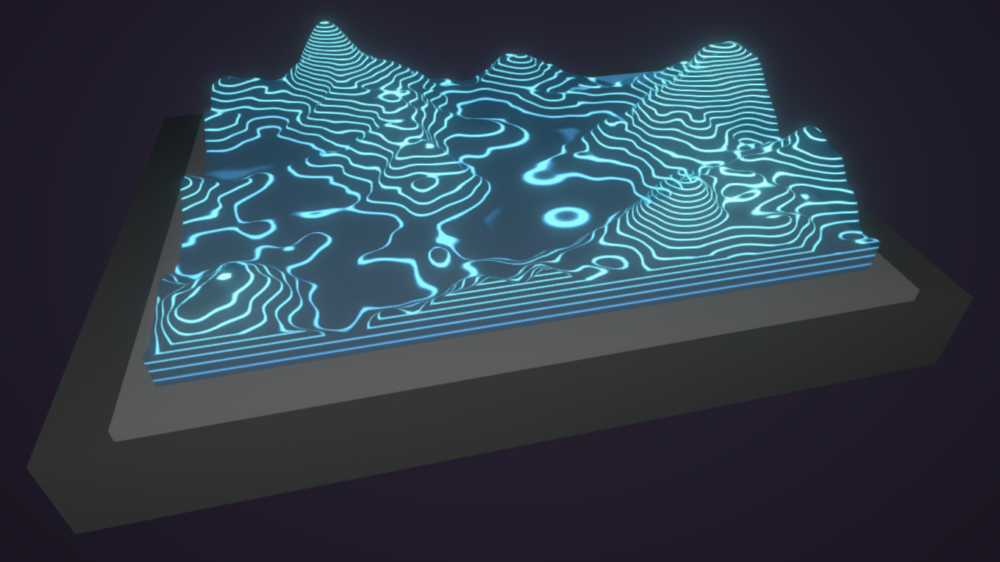
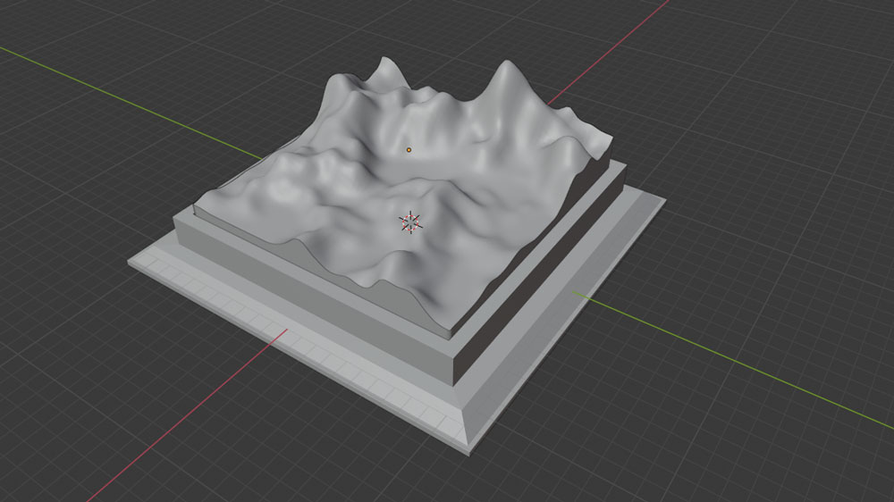
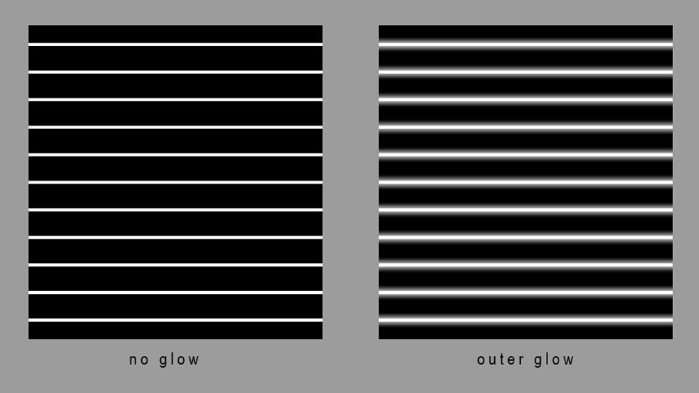

Topographic Map
FEBRUARY 12, 2020

This topographic shader was an effect that I hadn't seen any breakdowns or examples of before so I decided
to make one myself! The effect uses the vertex height of the mesh so there are more contor lines drawn near the top and less near the bottom.
Then just add a panning effect and lerp some colours together! To project the texture, I used one third of the triplanar mapping calculations
so no unwrapping needed which is great since the mesh can be a bit dense depending on how smooth you want the lines to be. The most important part of this effect is the contour lines increasing as elevation increases. I also wanted to
go for a hologram effect too! I think it looks pretty cool combining an old-school type of map with a sci-fi element.
To create the mesh of the map, I followed this tutorial to generate terrain
in Blender. Any method of generating a mesh vaguely shaped like terrain will do, but make sure that the mesh is correctly oriented when
you import it to Unity so that the Y-axis is pointing up. (This will be important because a big part of our shader is driven by the
Y values of our vertex positions). After applying the Displace modifier, you can also manually adjust the terrain using the proportional editor.

We need to create a texture for the panning lines to project onto the mesh. Just make a bunch of horizontal lines in your preferred
image editor! Make sure that they're equally spaced, we will deal with the increasing or decreasing amount of lines in the shader.
You can also add a little outer glow around the lines for a glowing effect.

Shader time! The first step is to get a nice gradient (or values between 0 and 1) that is driven by the height of the vertex, specifically
the y of the vertex position. So just add the Position node and Split it, taking just the Y or G output. Set the Position
to object space since we just want the vertex height relative to the object. But the gradient has little
or no contrast. If we continue like this, there won't be a big difference between the peaks and valleys of the map. So we can use the Remap
node to exaggerate the differences in the heights of the map. You may have to play around with the Remap values depdending on your mesh.
If the mesh is flatter, the range will be greater, and if it's bumpier with big hills and low valleys, you may not even need this step. The goal
here is to get a smooth gradient that goes from white to black instead of just grey. Don't forget to Saturate after though to clamp the values back to (0-1).
Now, we can use this gradient to Lerp some colours! We will also use this gradient to scale the contour lines according to the height.
We want the lines to be projected somehow onto the mesh and we don't want to deal with trying to unwrap this mesh, so we can either go with using a screenspace
method or triplanar! But triplanar mapping already uses a Z projection, as if the texture is projected onto the mesh from the top. So, we can just
take this part of the triplanar calculation since we don't need to project the texture from the sides. This time, the Position node should be
in world space BECAUSE. Take the X and Y values of the world position using the Split node and this becomes the UV's for our texture! Right now,
the contor lines are consistent because we haven't taken our vertex height gradient into account yet. So multiply our height gradient with our top-down
projected UV's and voila!
The Bells and Whistles
You can play with your UV values to get a panning effect and increase or decrease the tiling, remember your UVs follow this equation: Value = Value*Scale + Offset.
For a more holographic effect, you could also decrease with the alpha value of the texture so the space between the lines are transparent and add a little outer glow
to the lines in Photoshop. Changing the look of the lines texture will have a big impact on the overall effect!